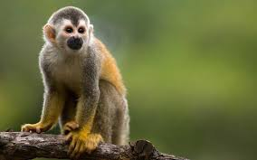
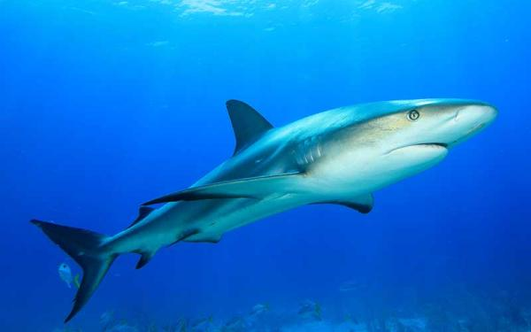
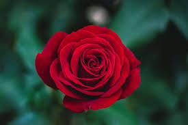
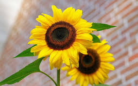

Mono
Animal Terrestre. Son animales mamíferos, dotados de cuatro extremidades
prensiles y una cola. Su tamaño tiende a ser pequeño a mediano, o mediano a grande.
Aguila
Animal Aéreo. Mide entre 90 centímetros y un metro, presentan un plumaje color
café.
Tiburon
Animal Acuático. Pez selacio marino, muy voraz,
de mediano o gran tamaño, cuerpo fusiforme, de boca grande, dientes cortantes, y del que existen varias
especies.


Rosa
Flor del rosal, notable por su belleza, la suavidad de su fragancia y su color.
Girasol
Hojas alternas, grandes, ovadas y más o menos cordadas, con el margen aserrado.
Inflorescencia en capítulo terminal de gran tamaño, con flores liguladas amarillas, situadas en el exterior
y flosculosas negruzcas o pardas en el disco.
Tulipan
Planta herbácea de la familia de las liliáceas, vivaz, con raíz bulbosa y tallo liso,
hojas grandes, radicales, flor única en lo alto del escapo,
grande, globosa, de seis pétalos de hermosos colores e inodora, y fruto capsular con muchas semillas.
Album de fotos